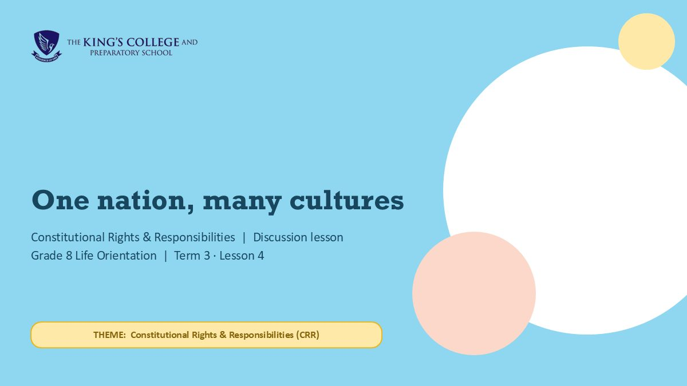

Term 3 · Lesson 4 · Discussion lesson
One nation, many cultures
Start here
Today I will
- Explain what nation building means
- Describe how cultural diversity enriches us
- Name ways that faith organisations serve the nation
South Africa has 12 official languages. In how many can you greet someone?
Words to know
- Nation building
- Working together so that people of different backgrounds feel they belong to one country with a shared future.
- Culture
- A group's whole way of life: language, food, dress, beliefs, values and traditions, passed down through generations.
- Cultural diversity
- Many different cultures living and working together.
- Heritage
- The traditions, places and history we inherit from those who came before us.
- Ubuntu
- 'I am because we are': we are all connected, so we care for one another.
- Prejudice
- Judging a person or group negatively before you know them.
Slides

Videos
Notes
South Africa is one of the most diverse countries in the world, with 12 official languages and many cultures and faiths. Our history divided people by race and culture, so building one nation takes effort from every one of us. When we respect each other's cultures, our differences become a strength.
What is nation building?
Nation building means working together so that people of all backgrounds feel they belong to one country with a shared future. It includes being proud of who we are, accepting and respecting differences, healing the hurts of the past and working together for a better South Africa. The Preamble to the Constitution says that South Africa 'belongs to all who live in it, united in our diversity'.
Symbols and ideas of unity
| Symbol or idea | Meaning |
|---|---|
| Ubuntu | 'Umuntu ngumuntu ngabantu': a person is a person through other people. 'I am because we are.' We are connected, so we care for one another. |
| The rainbow nation | Archbishop Desmond Tutu's image of many colours that together make something beautiful. |
| The coat of arms motto | '!ke e: /xarra //ke' in the /Xam language means 'diverse people unite'. |
| The national anthem | It uses five of our languages: isiXhosa, isiZulu, Sesotho, Afrikaans and English. |
| National days | Freedom Day (27 April), Youth Day (16 June), Heritage Day (24 September), Day of Reconciliation (16 December). |
Building the nation at home, school and in the community
| Where | What I can do |
|---|---|
| At home | Respect every family member; learn my family's history and heritage; teach younger children to respect others. |
| At school | Make friends across cultures; include new learners; learn a greeting in another language; stand up against racist or xenophobic jokes. |
| In my community | Volunteer at a church outreach, food drive, children's home or clean-up; support local businesses; respect public property. |
| As a citizen | Obey the law; respect the Constitution and the rights of others; vote one day; be proud of our country. |
Culture and cultural diversity
Culture is a group's whole way of life: language, food, dress, beliefs, values, music, art and traditions, passed down from one generation to the next. Heritage is what we inherit from those who came before us: traditions, places, stories and history. Cultural diversity means many different cultures living and working together.
- Norms are the shared rules of behaviour in a culture, e.g. how you greet an elder or behave as a guest.
- Values are ideas about what is right and important, e.g. respect, honesty, family.
- Culture can guide our choices (what we eat, how we celebrate), but every culture also has to respect the rights of every person.
Respecting differences
Differences in culture, language, religion and gender can enrich us or divide us. They divide us when we use stereotypes (fixed ideas about a whole group) and prejudice (judging people negatively before we know them). Prejudice can lead to discrimination, racism and xenophobia. Differences enrich us when we are curious, ask questions respectfully and learn from each other.
| Divides us | Builds unity |
|---|---|
| Jokes and stereotypes about a culture | Asking respectfully and learning about it |
| Only spending time with 'people like us' | Making friends across cultures |
| Mocking someone's food, accent or clothes | Trying new food and learning greetings |
| Thinking my culture is better than others | Respecting all cultures as equal in dignity |
The Bill of Rights protects cultural, religious and language rights: freedom of religion (section 15), language and culture (section 30) and the rights of cultural, religious and language communities (section 31).
How faith organisations contribute
Faith organisations (churches, mosques, temples and synagogues, and the charities they run) play a big part in serving South Africa, often helping people of every culture and faith.
- Social care: feeding schemes, soup kitchens, shelters for homeless people, children's homes and old-age homes.
- Disaster relief: Gift of the Givers (founded by a Muslim doctor) and church groups bring food, water and medical help after floods, fires and droughts.
- Education and health: schools, clinics, skills training and HIV support groups.
- Reconciliation: during and after apartheid many church leaders, such as Archbishop Desmond Tutu, worked for justice and peace; Tutu chaired the Truth and Reconciliation Commission.
- Moral guidance: teaching values such as honesty, respect, forgiveness and service.
A biblical view
In Revelation 7:9 John sees a great crowd 'from every nation, tribe, people and language' worshipping God together. God created our diversity and loves people of every culture. Unity does not mean everyone must be the same; it means respecting and loving one another across our differences, as Jesus taught.
Twelve official languages
South Africa's 12 official languages are: isiZulu, isiXhosa, Afrikaans, English, Sepedi, Setswana, Sesotho, Xitsonga, siSwati, Tshivenda, isiNdebele and South African Sign Language (added in 2023). isiZulu is the language most spoken at home. Many South Africans speak three or more languages. Learning even a few words of someone else's language shows respect and opens doors to friendship.
Case study: Heritage Day at King's
For Heritage Day the Grade 8s brought food from their families to share. Aarav brought his granny's biryani, Mia brought melktert and Thabo brought phutu and amasi. When one learner pulled a face at Thabo's food and called it 'disgusting', a few people laughed and Thabo went quiet. Mia immediately tasted the phutu and said, 'This is lekker, Thabo.' Aarav asked Thabo to explain how his family makes it. Mr Ncube, who was on duty, heard the conversation and invited Thabo to tell the class what the dish means to his family. By the end of break the bowl was empty, and the learner who had made the comment came back for a second helping and apologised.
Questions to think about: What was the prejudice in the story? How did Mia and Aarav act as nation builders? What can a class do to make sure everyone's culture is respected?
Stereotypes, prejudice and discrimination
| Word | Meaning | Example |
|---|---|---|
| Stereotype | A fixed, oversimplified idea about a whole group | 'All Afrikaans people…' or 'All Indian people…' |
| Prejudice | A negative judgement about a person or group before you know them | Not wanting to sit with someone because of their culture |
| Discrimination | Treating someone unfairly because of a prejudice | Not choosing someone for a team because of their race |
| Xenophobia | Fear or hatred of people from other countries | Blaming foreign nationals for every problem, or attacking them |
Each step can lead to the next: a stereotype becomes prejudice, and prejudice becomes discrimination. Getting to know people as individuals is the best way to break the chain.
Nation builders
- Nelson Mandela: after 27 years in prison, he chose reconciliation instead of revenge and became South Africa's first democratically elected president in 1994.
- Archbishop Desmond Tutu: a church leader who fought apartheid peacefully, called South Africa the 'rainbow nation' and chaired the Truth and Reconciliation Commission.
- Dr Imtiaz Sooliman: founded Gift of the Givers in 1992; it has helped millions of people in disasters in South Africa and around the world.
- Ordinary people: teachers, nurses, volunteers, coaches and church members who serve others every day.
Worked exam answers
Question: Explain how ubuntu can help to build a nation. (1 x 2) (2)
Answer: Ubuntu teaches that we are connected and should care for one another ✓, so people help their neighbours across cultures and communities become more united ✓.
Question: Describe ONE way in which a faith organisation contributes to South Africa. (1 x 2) (2)
Answer: Gift of the Givers brings food, water and medical help to communities after floods and other disasters ✓, which helps people of every culture and faith survive and rebuild their lives ✓.
Be able to define nation building, culture, cultural diversity and ubuntu; give ways to build the nation at home, school and in the community; and explain how a faith organisation contributes, with an example.
Different cultures, one nation: respect builds unity.
John sees people 'from every nation, tribe, people and language' worshipping God together. What does that teach us about our differences here?
In class: Our unity map
- Each person shares ONE family tradition: a food, a greeting or a celebration.
- Draw a circle for each person with their tradition.
- In the middle, write what ALL of you share (e.g. family, faith, sport, braai, love for SA).
- Write one difference you enjoyed learning about.
- Suggest ONE way our class can celebrate Heritage Day (24 September) together.
Test yourself
- What does 'ubuntu' mean?
- Define 'cultural diversity'.
- Name ONE way in which a faith organisation contributes to nation building.
Show answers
1. 'I am because we are': we are connected and care for one another. 2. Many different cultures living and working together. 3. Any one: feeding schemes, disaster relief (e.g. Gift of the Givers), shelters, care for orphans, bringing people of different backgrounds together.
Finished early?
Share something about your own heritage and learn to respect others'.
- In your LO book, draw a card titled 'My heritage'.
- Write about ONE tradition, food, celebration or story from your family, and what it means to you.
- Write one respectful question you could ask a friend from a different culture about theirs.
- End with one sentence that explains ubuntu in your own words.